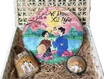

Câu hát còn ngân
Ví, giặm Tình ca
Dân ca ví, giặm từ lâu đã trở thành một phần không thể thiếu trong đời sống văn hóa của người dân Nghệ An và Hà Tĩnh. Những câu hát mộc mạc chứa đựng tình yêu quê hương, tình cảm gia đình và tâm hồn chân thành của con người xứ Nghệ. Năm 2014, dân ca ví, giặm Nghệ Tĩnh được UNESCO ghi danh là Di sản văn hóa phi vật thể đại diện của nhân loại.
Lấy cảm hứng từ di sản ấy, bộ sản phẩm Ví, giặm Nghệ Tĩnh thuộc bộ sưu tập “Sắc Xanh Xứ Nghệ” khắc họa hình ảnh đôi trai gái trong trang phục truyền thống, kết hợp cùng nốt nhạc và khung cảnh quê hương trên mẹt tre, túi mây tre đan và móc khóa hình nón.
Các sản phẩm được làm từ tre và mây tự nhiên có nguồn gốc từ làng nghề mây tre đan xã Nghi Thái. Tại làng nghề, người thợ sử dụng những kỹ thuật truyền thống để chẻ, vót, phơi, uốn và đan nguyên liệu thành các sản phẩm thủ công. Mỗi sản phẩm là kết quả của sự khéo léo, kiên trì và kinh nghiệm được gìn giữ qua thời gian.
Việc kết hợp hình ảnh dân ca ví, giặm với sản phẩm mây tre đan Nghi Thái tạo nên sự gặp gỡ giữa hai giá trị văn hóa của Nghệ An: di sản nghệ thuật dân gian và nghề thủ công truyền thống. Nếu lời ca được lưu truyền qua giọng hát, thì kỹ nghệ đan lát được tiếp nối qua đôi bàn tay người thợ.
Sản phẩm là sự kết hợp giữa giá trị văn hóa và nghề thủ công truyền thống, góp phần đưa dân ca ví, giặm đến gần hơn với du khách, đặc biệt là thế hệ trẻ. Qua từng đường đan và hình ảnh, “Sắc Xanh Xứ Nghệ” mong muốn lưu giữ lời ca quê hương, khơi gợi niềm tự hào văn hóa và lan tỏa những giá trị di sản qua những món quà giản dị, thân thiện với môi trường.